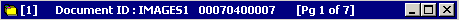

The viewer window title bar displays information that is passed from the launching application. Depending on how your site is configured, the title bar displays any of the following:
This example shows the title bar from a viewer that was launched by the Index Correction Utility or the ROI Module.

Title bar for viewer launched by the Index Correction Utility or ROI Module